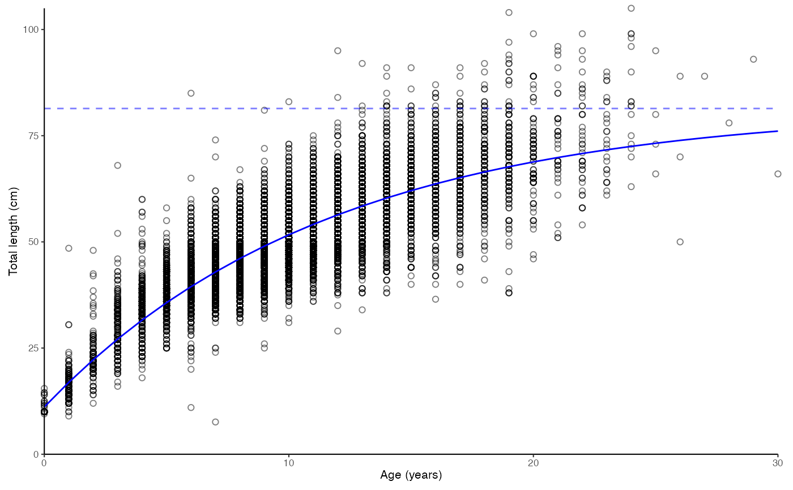
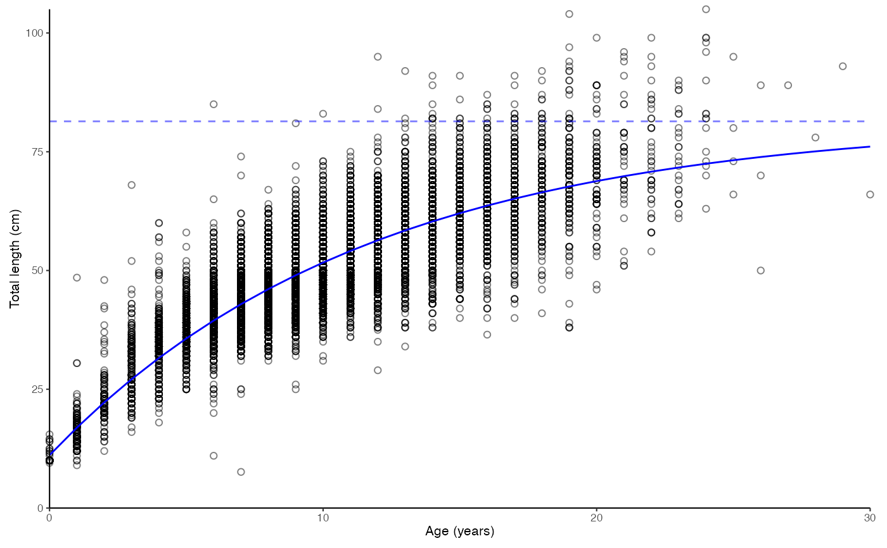

Plot age-length relationships and growth curves
plot_growth(
dt,
length = "length",
age = "age",
sex = "sex",
female.sex = "F",
male.sex = "M",
length.unit = "cm",
split.by.sex = FALSE,
growth.model = 1,
force.zero.group.length = NA,
force.zero.group.strength = 10,
force.zero.group.cv = 0,
show.Linf = TRUE,
boxplot = TRUE,
base_size = 8,
legend.position = "bottom"
)Arguments
- dt
A data.frame, tibble or data.table
- length
Character argument giving the name of the length column in
dt- age
Character argument giving the name of the age column in
dt- sex
Character argument giving the name of the sex column in
dt. Ignored ifsplit.by.sex == FALSE.- female.sex
A character denoting female sex in the
sexcolumn ofdt- male.sex
A character denoting male sex in the
sexcolumn ofdt- length.unit
A character argument giving the unit of
length. Will be used in the labels of the figure.- split.by.sex
Logical indicating whether the result should be split by sex.
- growth.model
Integer defining the growth model. 1 = von Bertalanffy, 2 = Gompertz, 3 = Logistic.
- force.zero.group.length
Numeric indicating the length to which 0-group should be forced. Use
NAignore the forcing.- force.zero.group.strength
Numeric indicating how many percent of total fish should be added to the specified
force.zero.group.length.- force.zero.group.cv
Numeric indicating the coefficient of variation for the forced 0-group length. Resulting lengths will be randomly generated from a normal distribution.
- show.Linf
Logical indicating whether Linf values should be shown as dashed vertical lines.
- boxplot
Logical indicating whether boxplots (
TRUE) should be used to show data over points (FALSE)- base_size
Base size parameter for ggplot. See ggtheme.
- legend.position
Position of the ggplot legend as a character. See ggtheme.
Value
A list containing the plot, text for Rmarkdown and Shiny applications, and estimated parameters (params).
Details
Uses the fishmethods::growth function to calculate the growth curves. Zero group length can be forced to the growth functions using the force.zero.group.* parameters.
Examples
# Simple plot. Note that a list is returned.
data(survey_ghl)
plot_growth(survey_ghl, length = "length", age = "age")
#> $plot
 #>
#> $text
#> [1] "von Bertalanffy growth function coefficients: \n Linf (asymptotic average length) = 91.2 cm +/- 88.3 - 94.6 (95% CIs) \n K (growth rate coefficient) = 0.0633 +/- 0.059 - 0.068 (95% CIs) \n t0 (age at length 0) = -3.04 (years) +/- -3.337 - -2.769 (95% CIs) \n tmax (life span; t0 + 3/K) = 44.4 years \n Number of included specimens = 10401 \n Total number of measured = 618779 \n Excluded (length or age missing): \n Length = 0; age = 608378"
#>
#> $params
#> # A tibble: 3 × 7
#> term estimate std.error statistic p.value conf.low conf.high
#> <chr> <dbl> <dbl> <dbl> <dbl> <dbl> <dbl>
#> 1 Sinf 91.2 1.51 60.3 0 88.3 94.6
#> 2 K 0.0633 0.00231 27.4 4.90e-160 0.0586 0.0680
#> 3 t0 -3.04 0.139 -21.8 1.71e-103 -3.34 -2.77
#>
# \donttest{
# Split by sex
plot_growth(survey_ghl, split.by.sex = TRUE)$plot
# Data as points. Forcing zero group to 10 cm
plot_growth(survey_ghl, force.zero.group.length = 10, boxplot = FALSE)$plot

# }
#>
#> $text
#> [1] "von Bertalanffy growth function coefficients: \n Linf (asymptotic average length) = 91.2 cm +/- 88.3 - 94.6 (95% CIs) \n K (growth rate coefficient) = 0.0633 +/- 0.059 - 0.068 (95% CIs) \n t0 (age at length 0) = -3.04 (years) +/- -3.337 - -2.769 (95% CIs) \n tmax (life span; t0 + 3/K) = 44.4 years \n Number of included specimens = 10401 \n Total number of measured = 618779 \n Excluded (length or age missing): \n Length = 0; age = 608378"
#>
#> $params
#> # A tibble: 3 × 7
#> term estimate std.error statistic p.value conf.low conf.high
#> <chr> <dbl> <dbl> <dbl> <dbl> <dbl> <dbl>
#> 1 Sinf 91.2 1.51 60.3 0 88.3 94.6
#> 2 K 0.0633 0.00231 27.4 4.90e-160 0.0586 0.0680
#> 3 t0 -3.04 0.139 -21.8 1.71e-103 -3.34 -2.77
#>
# \donttest{
# Split by sex
plot_growth(survey_ghl, split.by.sex = TRUE)$plot
# Data as points. Forcing zero group to 10 cm
plot_growth(survey_ghl, force.zero.group.length = 10, boxplot = FALSE)$plot

# }